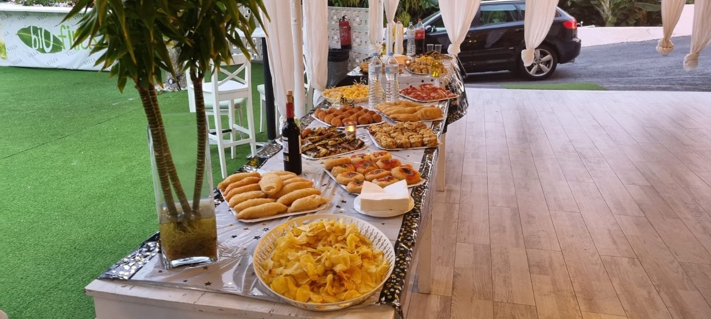
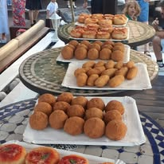
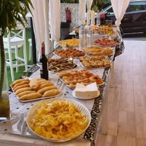
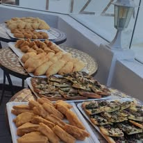

Buffet su ordinazione · Las Galletas
Buffet a Tenerife per feste ed eventi
Pizza in teglia, pizzette, fritti napoletani, panini e specialità da forno preparati artigianalmente da El Capricho.
Richiedi informazioniUna festa con il sapore di Napoli
Buffet preparati su misura
Prepariamo buffet per compleanni, feste private, riunioni ed eventi aziendali. La composizione viene concordata in base al numero di persone, al tipo di evento e alle specialità desiderate.
La nostra proposta nasce dalla vera rosticceria napoletana: pizza in teglia, pizzette, fritti, panini e prodotti da forno preparati nel nostro laboratorio a Las Galletas.
I nostri lavori
Buffet reali preparati da El Capricho



Cosa possiamo preparare
Una selezione costruita intorno al tuo evento
Pizza in teglia
Margherita e altre varianti della produzione giornaliera.
Pizzette di rosticceria
Le classiche pizzette tonde napoletane.
Fritti napoletani
Frittatine, crocchè, arancini, montanare e altre specialità.
Panini e forno
Panini, rustici e preparazioni adatte a buffet e ricorrenze.
Come ordinare
Raccontaci il tuo evento
Indica data, numero di persone e cosa vorresti. Ti risponderemo per confermare disponibilità e dettagli.
El Capricho · Las Galletas
Contatti
Avenida Fernando Salazar González 13A, 38630 Las Galletas, Tenerife
+34 922 731 223 · info@elcaprichotenerife.com